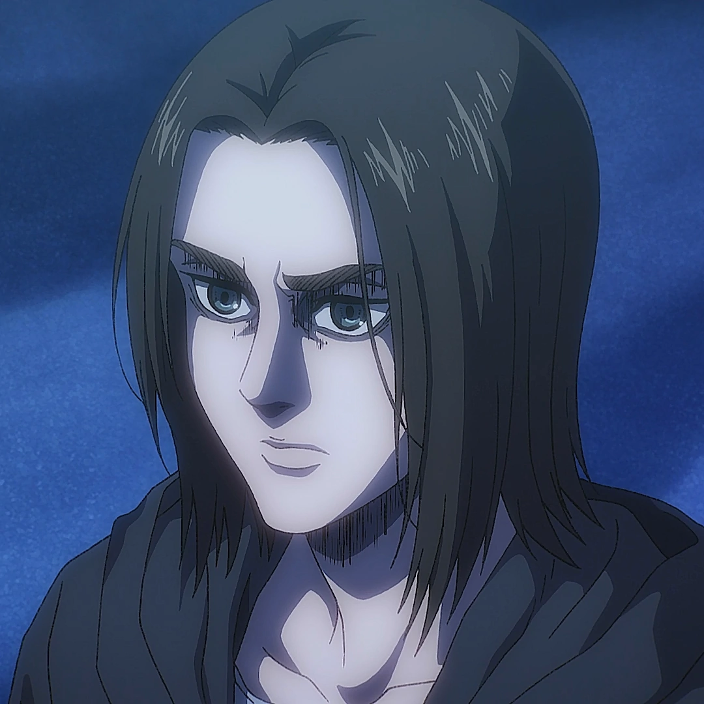

Eren is Shingeki no Kyojin's protagonist. His childhood friend,
Mikasa, notes on numerous occasions that he acts on impulse without
thinking things through, and she often pulls/carries/throws him when
he starts fighting with others to protect him from himself. Along with
Mikasa, he tends to spend his free time with their mutual friend, Armin.